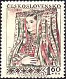
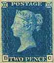

APWP - Statutes
The Philatelic Webmasters Organization (PWO) was created in order to promote and to develop the philatelic Webmastering.
Its members are stamp collectors who actively contribute to the development of the stamp collecting on the Web by writing interesting philatelic articles and by creatively integrating them with philatelic images into their philatelic sites.
The Philatelic Webmasters Organization facilitates the relationships and the exchange of experience among its members, by encouraging direct contacts, by organizing on-line and off-line study groups, meetings, forums, competitions, common exhibitions and other activities.
To become member, a candidate applies on-line and is then automatically included in the members' database. The President decides at a later time if the candidate becomes a member or is rejected. The reasons for a rejection have to be presented to the candidate in a written form. The candidate can appeal against the decision at the Executive Council. The decisions of the Executive Council are definitive.
It is required that all PWO members strictly observe the provisions of present Statutes, as well as the Netiquette rules. All members have the right to privacy and shouldn't be spammed or contacted too often without their previous approval. The PWO support the Philatelic code of ethics for the use of UPU member counties. The President, assisted by the Executive Council, has the right to expel members who repeatedly violate the provisions of present Statutes.
The PWO membership is a lifetime one and it is obtainable for free at present.
To quit PWO it is necessary and sufficient to notify the President by e-mail. No reasons are required, but an explanation is welcomed. The records of members who have announced that they decided to quit PWO will be deleted from the database and won't appear on the members' list.
The content of the database is published on the Net. There are displayed the name of the site, the kind of site (Homepage, Commercial, Postal Authority, Philatelic Organization), the URL of the site, the name of the author, the country and the e-mail address of the Webmaster.
The PWO is led by a President and by a staff of Officers who compose the Executive Council.
The members of the Executive Council are co-opted by the Executive Council, either through an internal procedure, or due to a request of a PWO member. It is expected that a candidate presents a short dossier concerning hers/his activity on the Net, the address of her/his Web site(s), Web philatelic awards and references. The candidate will be informed by e-mail about the decision of the Executive Council.
It is expected that a member of the Executive Council of the PWO is not only a pioneer of the philatelic activity on the Net, but also that she/he encourages other stamp collectors toward the publishing activity, that she/he has already published several pages created by them and that she/he agrees to invest some time in the activity and in the development of the PWO.
The list of the Executive Council members is published on the PWO site.
One important goal of PWO is to elaborate regulations and rules for Web sites competitions, to help in the preparation of competent judges and eventually to organize its own worldwide, regional, thematic or other kind of competitions.
The list of approved judges and their domain of expertise will be published on the Net.
The activity of the PWO is assured through donations, through fees that can be demanded for the participation at different activities, like competitions or special forums and through space offered on its site for publicity to commercial philatelic organizations.
PWO members are informed about the activities of the club by articles published on this site and/or by e-mail along with information concerning updates of this site. If deemed necessary, a newsletter could also be published and distributed via e-mail.
The President, assisted by the Executive Council, is responsible for the relationships with other philatelic organizations, like FIP, UPU, AIJP and ASCAT. He may establish special relationships between PWO and other philatelic organizations
The PWO actively supports the efforts of the World Association for the Development of Philately (WADP) in its activity of philately promotion worldwide and in its fight against the illegal stamps
The official languages of the PWO, used to communicate with the President and with the Secretariat are English, French or German.
The English version of the PWO Statutes is the official one.
If necessary, the present Statutes may be changed or adapted by the President, assisted by the Executive Council, in order to assure the necessary flexibility in the functioning of the PWO. The PWO membe r s will be informed about the changes through this site and/or by e-mail.


Created: 02/03/01. Revised: 11/27/05 . Copyright © 2001 by PWO & by Victor Manta, Switzerland All rights reserved worldwide.